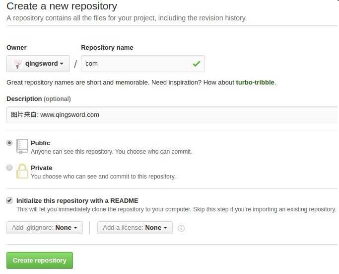
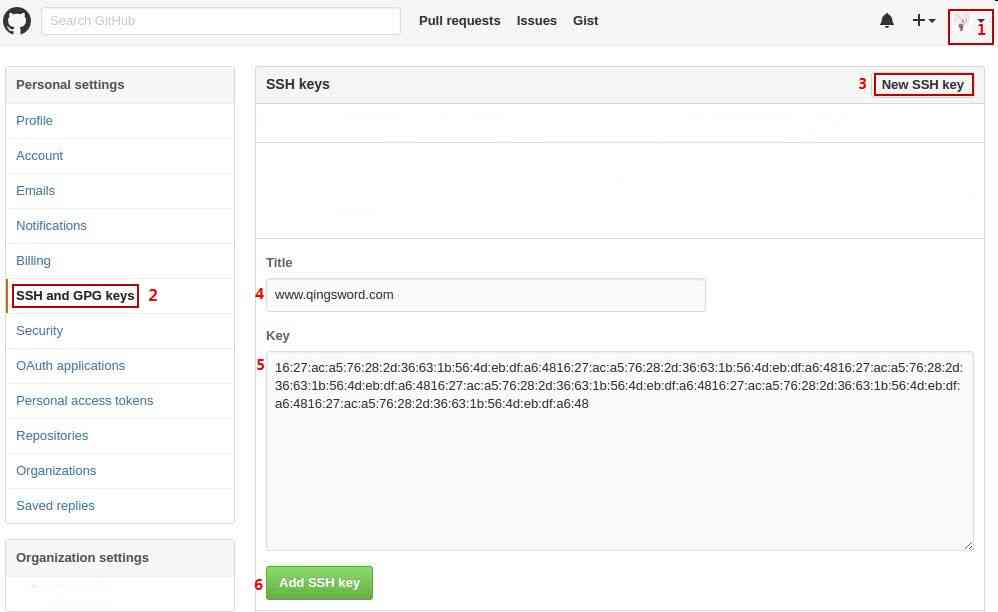
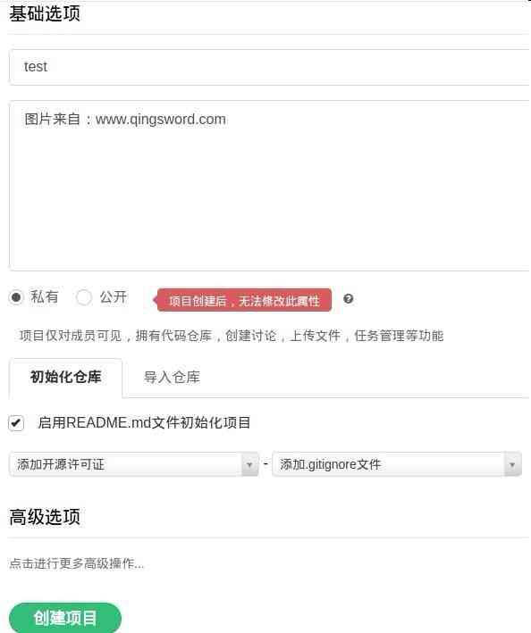

[Git使用手册]-6-远程仓库
引言
这篇文章分为两部分，第一部将分演示如何使用git将本地仓库推送给另一台PC，多台PC之间如何互相推送本地代码；第二部分将演示在线Git代码托管平台的使用。
文章目录
0×1.如何使用git将本地仓库推送给另一台PC
试验环境介绍：两台Ubuntu系统，分别安装了openssh-server，git；
试验机A的IP：192.168.100.1/24；
试验机B的IP：192.168.100.200/24；
实例一：在B上创建一个本地git仓库，使用git远程克隆将B上的仓库克隆到A
#1.首先在A和B上都安装git和openssh（如果只是A推送给B，B作为服务端，那么A上面不需要安装openssh-server，安装openssh-client即可） www@qingsword.com:~$ sudo apt-get install git openssh-server #2.分别配置A和B的git身份信息，在本系列第一篇文章中已经详细说明，如下 #初始化本地用户名 www@qingsword.com:~$ git config --global user.name QingSword #邮箱信息，方便对方给你发邮件 www@qingsword.com:~$ git config --global user.email admin@qingsword.com #3.在B中有一个普通用户qingsword，现在在其家目录创建一个文件夹pchub，并初始化为git仓库目录 B@qingsword.com:~$ mkdir pchub B@qingsword.com:~$ cd pchub/ B@qingsword.com:/pchub$ git init 初始化空的 Git 仓库于 /home/qingsword/pchub/.git/ #4.在pchub仓库中，新建一个文件file1，并且写入数据"aaa"，提交这次修改，默认情况下，在第一次提交的时候，git会创建一个新的分支"master"，并将修改提交到这个分支中，而实际上是可以在提交前创建一个新的分支，将修改提交到新分支中的 B@qingsword.com:/pchub$ echo aaa > file1 B@qingsword.com:/pchub$ git add file1 B@qingsword.com:/pchub$ git commit -m 'master update' [master（根提交）6e0d502] master update #5.在A上克隆B中的仓库pchub到本地，注意格式 #git clone ssh://远程机器上的用户名@远程机器IP/远程目录 #本例中因为远程仓库pchub目录是在B机器的qingsword用户的家目录中，所以使用了"~"符号 A@qingsword.com:~$ git clone ssh://qingsword@192.168.100.200/~/pchub #输入yes Are you sure you want to continue connecting (yes/no)? yes #输入B上面的qingsword用户的密码 qingsword@192.168.100.200's password: #克隆成功后，进入目录查看，是不是和远程一模一样？ A@qingsword.com:~$ cd pchub/ A@qingsword.com:~/pchub$ ls file1 A@qingsword.com:~/pchub$ more file1 aaa A@qingsword.com:~/pchub$ git log --oneline 6e0d502 master update A@qingsword.com:~/pchub$ git branch * master
实例二：在实例一的基础上，A在克隆到本地的pchub仓库目录中创建一个新的分支，并且将这个分支提交到B
#一般情况下，参与一个项目的修改都不是直接修改主分支，最好创建一个新的分支提交，通过大家共同的检查无误后，再由项目管理者将这个分支并入主分支 #1.创建A分支在其中添加文件file2，并写入数据bbb A@qingsword.com:~/pchub$ git checkout -b A 切换到一个新分支 'A' #查看并确认当前所在分支 A@qingsword.com:~/pchub$ git branch * A master #2.在A分支下创建新的文件file2并提交 A@qingsword.com:~/pchub$ echo bbb > file2 A@qingsword.com:~/pchub$ git add file2 A@qingsword.com:~/pchub$ git commit -m 'A branch update' [A 154bfda] A branch update #3.将分支A推送到B（因为这个仓库是从B克隆的，所以.git文件夹中会记录B的IP以及对应仓库目录名称路径等信息，如果这些信息发生变化，在执行push之前需要先执行git remote add来修改这些参数，稍后的实例三会介绍） A@qingsword.com:~/pchub$ git push origin A Are you sure you want to continue connecting (yes/no)? yes #输入B上面qingsword用户的密码，没有报错就说明推送成功了 qingsword@192.168.100.200's password: * [new branch] A -> A
此时在B上查看刚才的推送：
#多出来一个分支A B@qingsword.com:/pchub$ git branch A * master #切换到分支A B@qingsword.com:/pchub$ git checkout A B@qingsword.com:/pchub$ ls file1 file2 B@qingsword.com:/pchub$ git log --oneline 154bfda A branch update 6e0d502 master update #确定推送成功了 B@qingsword.com:/pchub$ more file2 bbb #确认无误后，将A合并到master分支中 B@qingsword.com:/pchub$ git checkout master B@qingsword.com:/pchub$ git merge A #在B上删除分支A B@qingsword.com:/pchub$ git branch -d A #现在回到A，尝试切换回master分支，git提示我们，因为B上面进行了一次合并，所以我们本地的master分支版本现在和B上面并不同步 A@qingsword.com:~$ git checkout master 切换到分支 'master' 您的分支落后 'origin/master' 共 1 个提交，并且可以快进。 （使用 "git pull" 来更新您的本地分支） #根据提示输入"git pull"命令来更新本地分支 A@qingsword.com:~$ git pull #B上面确实删除了A分支，但这个操作不会pull到A，在A中我们仍然可以在A分支下工作，并再次提交A分支 A@qingsword.com:~$ git branch A * master #查看master分支的历史版本，上次的提交被合并到主分支下了 A@qingsword.com:~$ git log --oneline 154bfda A branch update 6e0d502 master update
实例三：在实例二的基础上，现在我们不克隆B上面的pchub到本地，而是在本地初始化一个仓库并新建一个分支，然后将这个分支推送到B中的pchub仓库中
#1.在A本地创建一个git仓库目录 A@qingsword.com:~$ mkdir ahub A@qingsword.com:~$ cd ahub/ A@qingsword.com:~/ahub$ git init #2.新建并切换到branchA分支下 A@qingsword.com:~/ahub$ git checkout -b branchA #3.在branchA分支下新建文件file3，写入文本ccc，并提交 A@qingsword.com:~/ahub$ echo ccc > file3 A@qingsword.com:~/ahub$ git add file3 A@qingsword.com:~/ahub$ git commit -m 'branch branchA update' [branchA （根提交） 3e4ef2c] branch branchA update #查看当前存在的分支列表，发现并没有master分支，这是允许的，master分支只有在没有新建分支之前创建或提交的时候，才会默认被创建，但这并不意味着它是必须的 A@qingsword.com:~/ahub$ git branch * branchA #4.因为当前A上面这个仓库并不是通过远程克隆得到的，所以需要先添加远程仓库信息，注意格式 #git remote add origin ssh://远程主机中的用户名@远程主机IP/远程主机中git仓库路径 #在实例二中提到了.git目录保存了远程仓库的这些信息，如果是通过直接克隆得到的仓库目录，这些信息默认是保存在.git目录中无需修改的，如果远程仓库的IP或路径发生变化，就可以通过下面的命令来修改这些参数 A@qingsword.com:~/ahub$ git remote add origin ssh://qingsword@192.168.100.200/~/pchub #如果提示"fatal: 远程 origin 已经存在"，可以使用下面的命令删除这些信息再重新添加 A@qingsword.com:~/ahub$ git remote rm origin A@qingsword.com:~/ahub$ git remote add origin ssh://qingsword@192.168.100.200/~/pchub #5.配置好远程仓库信息后，使用下面的命令将分支branchA提交给B A@qingsword.com:~/ahub$ git push origin branchA #接下来的操作实例二中已经描述过，这里不再赘述
总结：通过上面的三个实例，我们学会了如何在PC和PC之间进行Git克隆和推送操作，这些操作充分体现了git分布式的思想，无需一台24小时运行的中央服务器，就可以在不同PC之间共享代码。
0×2.git代码托管平台
上面介绍了如何在PC和PC之间克隆和推送更新，正如本系列文章第一篇"Git简介"中提到的，git的使用者遍布全球，如果你在使用git的时候，对方正在睡觉，电脑没有开机就不能git，而"git代码托管平台"就是一些24小时不断电的git服务器，我们可以将代码git到上面，任何人都能随时随地的下载这些代码，下面介绍两个比较好用的"git代码托管平台"，一个是国外我们所熟悉的"Github"，另一个是国产的"Coding"。
a.Github
1）首先请到[Github官方网站]，注册一个账号并登陆。
2）登陆后，右上角有一个加号，点击它选择"New repository"，进入下面的界面，在"repository name"中输入仓库文件夹的名称，在"Discription"中输入仓库的描述信息，勾选Initialize会在创建时初始化，可选是否在初始化时创建.gitignore文件，本例假设创建的仓库地址是qingsword/com，点击下方的按钮，创建仓库：
3）创建公钥并提交到github（在push上传到github上时，使用此密钥对作为连接验证）
#-C参数后是该密钥的标识信息，用于区分密钥，可以自定义输入信息 www@qingsword.com:~$ ssh-keygen -t rsa -C "www.qingsword.com" #输入两遍用于加密此密钥的密码 Enter passphrase (empty for no passphrase): Enter same passphrase again: #生成后，公钥和私钥保存位置（qing为你自己的用户名，注意替换） Your identification has been saved in /home/qing/.ssh/id_rsa.#私钥 Your public key has been saved in /home/qing/.ssh/id_rsa.pub.#公钥 #用文本编辑器打开公钥文件，复制其中的内容 www@qingsword.com:~$ gedit /home/qing/.ssh/id_rsa.pub
4）根据下图的步骤，将公钥内容复制保存到Github，第1步，点击头像右方的小三角，里面有个"Setting"选项，第2步点击"SSH and GPG Keys"，第3步点击"New SSH Key"，Title是密钥标识，用于区分不同密钥，随便输入一个名称即可，下方Key粘贴刚才复制的公钥
5）配置好SSH后可以测试一下是否配置成功
#如果看到"successfully authenticated"这种提示信息就说明密钥对配置正确 www@qingsword.com:~$ ssh -T git@github.com
6）将刚才创建的com仓库克隆到本地
#为了不出现连接，已经将下面命令中"https"后面的说明号转换成中文说明号，使用时请使用英文说明号（大家可能奇怪这个地址是怎么知道的，其实就在仓库界面上面有显示，如果找不到显示，其实也没关系，标准格式就是github的官方网站后面接用户名再接仓库名称.git） www@qingsword.com:~$ git clone https：//github.com/qingsword/com.git #克隆完成后进入com目录，这是一个仓库目录，可以使用"ls -al"查看到下面存在一个".git"文件夹 www@qingsword.com:~$ cd com #并且其中的内容也是我们在github初始化这个仓库时输入的，"README.md"文件中保存了我们输入的描述信息 www@qingsword.com:~/com$ ls README.md www@qingsword.com:~/com$ more README.md # com 图片来自: www.qingsword.com
7）添加一个文件，并且推送到Github上的远程仓库中
#所有的操作和前面几篇文章中本地仓库的操作是相同的 www@qingsword.com:~/com$ echo aaa >> file1 www@qingsword.com:~/com$ git add file1 www@qingsword.com:~/com$ git commit -m 'update' #添加远程仓库的信息，格式如下 #git remote add origin git@github.com:github用户名/仓库名称.git www@qingsword.com:~/com$ git remote add origin git@github.com:qingsword/com.git #如果提示"fatal: 远程 origin 已经存在"，运行下面的命令先删除，再重新添加 www@qingsword.com:~/com$ git remote rm origin www@qingsword.com:~/com$ git remote add origin git@github.com:qingsword/com.git #将修改推送给远程仓库的master分支 www@qingsword.com:~/com$ git push origin master #接受密钥后，会让你输入一个密码，这个密码就是第3步中加密密钥时设置的那个密码 Are you sure you want to continue connecting (yes/no)? yes
这就是Github创建仓库并克隆到本地的全过程，现在，我们可以自己在Github上创建远程仓库并且克隆到本地修改，再push到远程仓库中了。
pull取回更新操作：
在多个人协同工作的环境下，在同一个仓库中维护相同的项目时，往往会遇到这种情况，我们在休息的时候别人可能修改并push了项目的部分代码，但这段修改在我们本地的仓库文件夹中并没有修改，这个时候就需要先使用pull将远程仓库的代码更新同步到本地仓库，再做修改提交，请看下面的实例：
#语法一：取回远程仓库分支的更新，再与本地的指定分支合并 #git pull <远程主机名> <远程分支名>:<本地分支名> #例如，取回origin主机的test分支与本地master分支合并 www@qingsword.com:~/com$ git pull origin test:master #语法二：取回远程仓库分支更新，与本地当前分支合并 #git pull <远程主机名> <远程分支名> #例如，取回origin主机的master分支与本地当前所在分支合并 www@qingsword.com:~/com$ git pull origin master
在git clone的时候，所有本地仓库的分支默认与远程仓库的同名分支，自动建立了(tracking)追踪关系，本地分支与远程分支如果存在追踪关系，在pull操作的过程中，能够省略分支名称，git会自动取回远程与本地当前分支同名的分支更新，并且自动与本地当前分支合并，追踪关系也可以手动设置，请看下面的实例：
#手动配置追踪关系，指定本地master分支追踪origin/test分支 www@qingsword.com:~/com$ git branch --set-upstream master origin/test #具有这种追踪关系后，在本地仓库的master分支，想要取回远程test分支与当前分支合并，只需要输入下面的命令，不需要输入远程分支名 www@qingsword.com:~/com$ git pull origin #如果当前分支只有一个追踪分支，远程主机名也可以省略，代表从唯一一个追踪的分支下载更新与当前分支合并 www@qingsword.com:~/com$ git pull
b.Coding
在国内所有的代码托管平台中，只有"Coding"是最接近"Github"功能的，但感觉和"Github"仍然有差距，不过其优势是，全中文的操作界面简单易懂。
1）首先请到[Coding官方网站]注册一个账号并登陆。
2）在"我的项目"里面，创建新项目，项目名称就是仓库的名称，本例填写test，下面是描述信息，其余和Github差不多，如下图所示：
3）添加SSH公钥到Coding，点击右上方自己的头像，选择"账户"，在面板中找到"SSH公钥"，将自己生成的SSH公钥添加进去。
4）克隆test仓库到本地
#点击进入创建的仓库控制面板后，点击"代码"，可以在界面中找到"HTTPS SSH 方式访问仓库"下方就是这个项目的克隆地址了，其实只要知道自己的用户名和创建时的仓库名称，这个地址自己也能推出来 www@qingsword.com:~$ git clone https：//git.coding.net/qingsword/test.git #因为创建test仓库的时候使用的是"私有的"，所以会要求输入此仓库的拥有者的用户名和密码 Username for 'git.coding.net': Password for 'qingsowrd@git.coding.net':
5）修改内容并上传到远程仓库
www@qingsword.com:~$ cd test www@qingsword.com:~/test$ echo aaa > file1 #使用参数"-A"可以一次性将此目录下所有文件的改动添加到缓存区 www@qingsword.com:~/test$ git add -A www@qingsword.com:~/test$ git commit -m 'update' #首先删除已经存在的origin信息 www@qingsword.com:~/test$ git remote rm origin #远程仓库origin信息的添加和github类似，只是地址改成了coding的地址而已，后面是用户名和仓库名称 www@qingsword.com:~/test$ git remote add origin git@git.coding.net:qingsword/test www@qingsword.com:~/test$ git push origin master